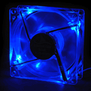
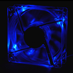

Sharkoon Strobe Fan
Šiais laikais jau nieko nenustebinsi ventiliatorių gausa kompiuteriniame korpuse. Be to, jie būna ne vien nuobodžios juodos spalvos, tačiau skaidrūs, šviečiantys, uv-reactive tipo ir t.t. Tačiau žmonės vis ieško kažko naujo, nematyto, įdomaus... Aišku, galima kokį nors gražų ventiliatorių pasidaryti pačiam, tačiau firmos, gaminančios moding'o detales taip pat nesnaudžia ir išleidžia vis įdomesnius produktus, kuriuos gali nusipirkti bet kuris žmogus. Štai šiandien aš nutariau apžvelgti ganėtinai unikalų ventiliatorių. Ilgai nelaukdamas, pristatau jį - Sharkoon Strobe Fan (blue).
Pirmas įspūdis
Gavęs šį ventiliatorių pagalvojau tik vieną dalyką - na ką, dar vienas šviečiantis ventiliatorius, kurių visur yra pilna. Tačiau kuo toliau, tuo labiau mane jis pradėjo dominti... Paskaitęs apie jį www.sharkoon.com dar labiau susidominau jo galimybėmis. Na ką gi, ištraukiam ventiliatorių iš įpakavimo ir štai ką matome:
Žvilgsnis iš arčiau ir specifikacijos
Kaip matote, šis ventiliatorius yra pagamintas iš labai skaidraus plastiko (daug skaidresnio, negu pavyzdžiui Titan firmos ventiliatoriai). Laidai yra "pasleevinti". Ventiliatorius gauna maitinimą iš standartinio molex'o, tačiau taip pat turi atskirą laiduką, kurį galima prijungti prie motininės plokštės ir matyti ventiliatoriaus apsukas. Norėčiau atkreipti jūsų dėmesį į porą išskirtinių savybių, kurias pastebėjau, vos išpakavęs jį.
Pirmiausia - tarp ventiliatoriaus ir maitinimo laido kištuko yra maža juoda dėžutė - tai visų efektų, kuriuos daro ventiliatorius, reguliavimo panelė. Valdymas yra ganėtinai paprastas, nes yra tik du ratukai, kuriuos galima sukinėti. Pirmasis ratukas keičia mirksėjimo intensyvumą, o antrasis, nežymiai keisdamas apsukas, reguliuoja įvairiausius šviesos efektus. Aišku, šis visas įrenginys nėra tobulas... Aš norėčiau, kad prie šio ventiliatoriaus nebūtų tiek daug laidų, nes juos gražiai paslėpti korpuse bus tikrai sunku. Aš nesusidūriau su jokiomis problemomis, tačiau žmonės, turintys didesnius langus korpuso šone ar viršuje nebus patenkinti tokia gausybe netvarkingų laidų.
Antra - 4 diodai yra įmontuoti į ventiliatorių ganėtinai įdomiu būdų, t.y. nėra jokios juostos juosiančios ventiliatoriaus korpusą, o yra naudojami ploni skaidrūs laidukai, kurie yra gražiai paslėpti ventiliatoriaus rėmo korpuse (mano manymu toks sprendimas atrodo daug estetiškiau). Kad suprastumėte geriau, apie ką aš čia šnekėjau, pateikiu jums nuotraukas:
Taip pat pateikiu šio ventiliatoriau specifikacijas:
- Energijos suvartojimas - 1.44 W
- Ventiliatoriaus greitis - 2500 rpm
- Maksimalus oro srautas - 27.05 CFM
- Triukšmo lygis - 27.4 dB(A)
- Connector - Molex connector (3-pin)
- Dydis - 80 x 80 x 25 mm
- Kita - efektų reguliavimo panelė
Ventiliatoriaus įdiegimas buvo labai paprastas (kaip ir visada), tereikėjo įsukti 4 pridėtus varžtukus ir baigta. Štai kaip jis atrodo korpuse:
Iš šių nuotraukų gali atrodyti, jog tai eilinis šviečiantis ventiliatorius, tačiau, kaip jau ir anksčiau minėjau, taip nėra. Tačiau, kad neliktų abejonių, kad šis ventiliatorius "moka" dar daugiau, padariau kelis filmukus (dienos ir nakties metu), kurie pademonstruoja ventiliatoriaus galimybes:
Tačiau, jei dėl kažkokių priežasčių nenorite siųstis video-klipų, galite tiesiog pažiūrėti i "gif'us":
 
Išvados
Iš pat pradžių, kai tik gavau šį ventiliatorių, buvau šiek tiek skeptiškos nuomonės apie jį, tačiau kuo toliau, tuo labiau jis man patinka... Aš iki šiol negaliu "atsižaisti" su juo.Vis sukinėju rankenėles, keitinėju efektus, darau, kad jis mirksėtų ir t.t. Niekada nemaniau, kad toks nežymus daiktas gali suteikti tiek malonumo. Beje, noriu pridurti, kad šis ventiliatorius patinka net mano mamai, o tai pasako, kad tai tikrai dėmesio vertas daiktas.
Noriu pabrėžti, jog šis ventiliatorius yra nepaprastai tylus ir yra praktiškai negirdimas, kai įstatomas i kompiuterio korpusą.
Taigi, pats laikas susumuoti visus pliusus ir minusus.
Pliusai:
- Originalumas
- Tylus
- Lengva instaliacija
- Sleevinti laidai
- Konkurencinė kaina
Minusai:
- Daugybė laidų
- Nėra valdymo "manual'o" (tačiau valdymas yra labai lengvai perprantamas)
- Kol kas neparduodamas Lietuvos parduotuvėse
Šiam gaminiui suteikiu 9,5 iš 10 balų, nes tai tikrai gražus ir praktiškas daiktas.
www.modding.lt komanda dėkoja Sharkoon Technologies už suteiktą galimybę apžvelgti vieną iš jų gaminių. Daugiau informacijos apie jų gaminius galite rasti adresu www.sharkoon.com
Beje, jei norėsite pakomentuoti mano straipsnį arba pareikšti savo nuomonę, rašykite man: marlin@delfi.lt arba apsilankykite www.modding.tik.lt forume.


{kind=link}
{kind=link}
{kind=link}
{kind=link}
{kind=link}
{kind=link}
{kind=link}
{kind=link}
{kind=link}
{kind=link}
{kind=link}